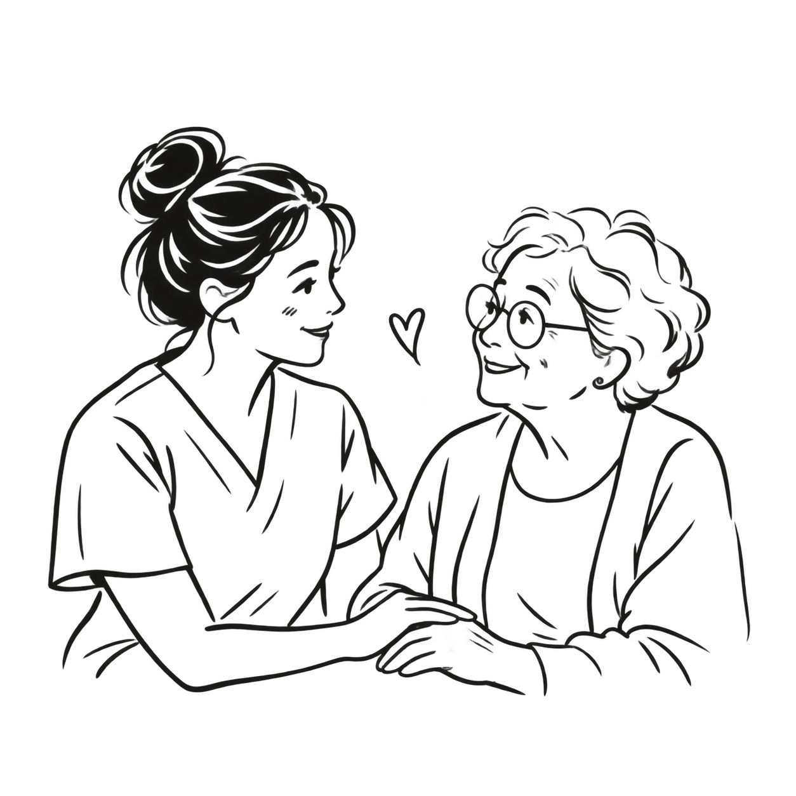
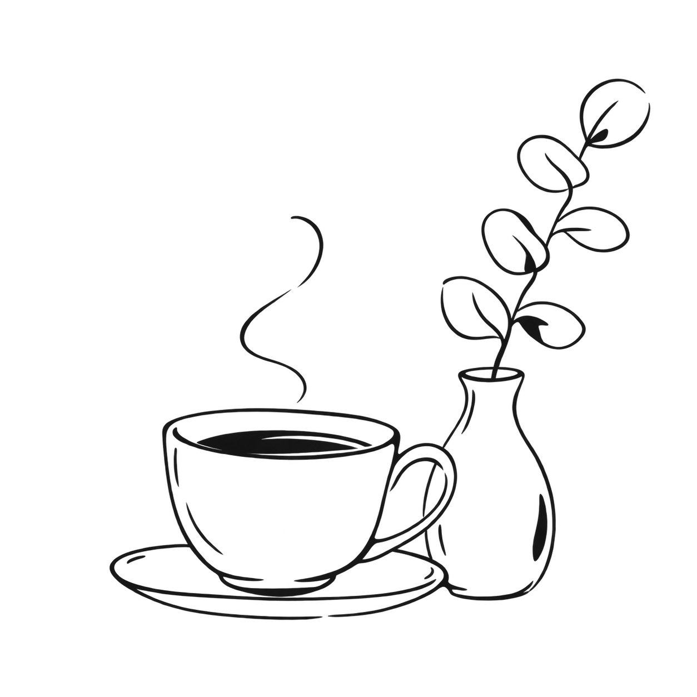

Your words.
A clearer starting point.
Drafted from what you said.
Ready for your review.
Thoughtful tools for care.
You review every note.
Drafted from what you said.
Ready for your review.
原创纸张线稿
窄幅媒体位置

原创审核线稿
未使用第三方照片
衬线标题是视觉核心。中性无衬线用于正文与操作，常规字重、紧凑标题行高、宽松正文行高。
72 / 40px · 1.05 · −0.035emTime for care.
56 / 32px · 1.05 · −0.035emEvery word matters.
24px · 1.2Thoughtfully put together.
32px · 1.2Ready for your review
18px · 1.5 · max 64chYour words are the starting point. You review and approve every note before it becomes a record.
16px · 1.5清晰的正文，明确的动作。中文正文用苹方 / 微软雅黑回退。
宋体回退 · 常规字重把时间留给照护。
参考图的确切字体未知；此处为系统字体实现。标注是桌面 / 手机尺寸，由视觉比例推导。规范：Typography 规范源码。
全局画布与内容区域统一为白色，浅灰划分章节，黑色用于主操作与页脚。参考图外侧的米色展示底板不用于页面背景。
强调色用于点、图标和状态；小字用对应的深色版本。浅灰分区不会用来弱化正文。
药丸只用于按钮与标签。字段、小卡片和分段横条用小圆角。下面可直接操作、用 Tab 键检查焦点。
禁用样例：尚未审核；加载样例保留动作文字。
彩色点必须配文字；这些小标签没有点击行为。
切换样例仅控制本段说明，不改变产品权限或保存策略。
Documentation starts with what you observed and said. The person providing care stays in control.
Try a component ↪左侧大衬线标题，右侧小白卡。分段条使用矩形小圆角，而不是药丸。
品牌标题用衬线；工作内容用无衬线。黑白对比、清晰层级。
See the type scale ↪连续白色内页、整幅灰色分区、细分隔线和有节奏的留白。
See colour & space ↪黑色主操作、描边次操作。错误、焦点、禁用与保存状态可辨。
Try the components ↪轻盈的黑色手绘线描，用在标题旁、品牌介绍与流程说明。留白充分，让内容先被看见。
更少笔画、更轻线条。透明底小笑脸、爱心与植物，给标题和卡片留一点温度。
欢迎语、介绍标题旁
下载 PNG ↗照护理念、短句旁
下载 PNG ↗卡片角落、章节收尾
下载 PNG ↗欢迎区、品牌页留白
下载 PNG ↗感谢文字、页尾点缀
下载 PNG ↗品牌标题的小点缀
下载 PNG ↗
适合首页介绍、陪伴照护与团队故事。
下载陪伴沟通 PNG ↗
适合记录功能与人工审核流程说明。
下载护士审核 PNG ↗适合照护理念与标题旁的温暖点缀。
下载双手托心 PNG ↗
适合 Time back to care 区块与页尾。
下载茶杯与植物 PNG ↗浅色底展示，保留原图比例；不作为功能按钮或状态图标。纯点缀用空 alt，独立信息用描述性 alt。人物均为 AI 生成虚构角色。
下载生成提示词与出处